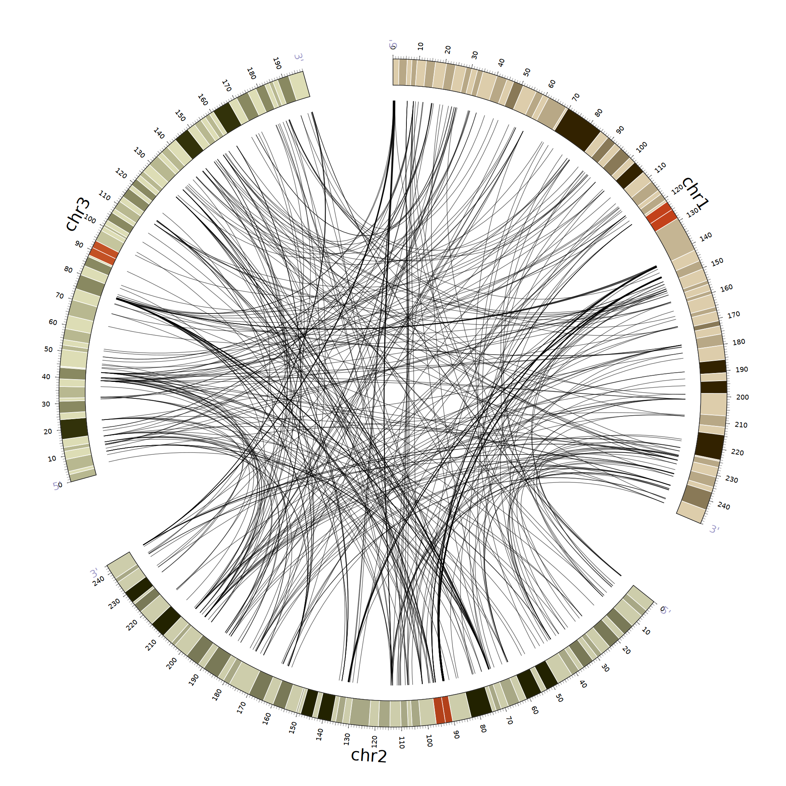
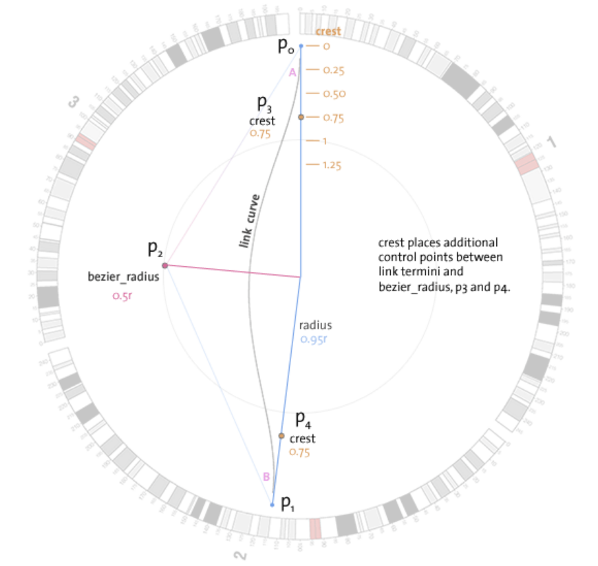
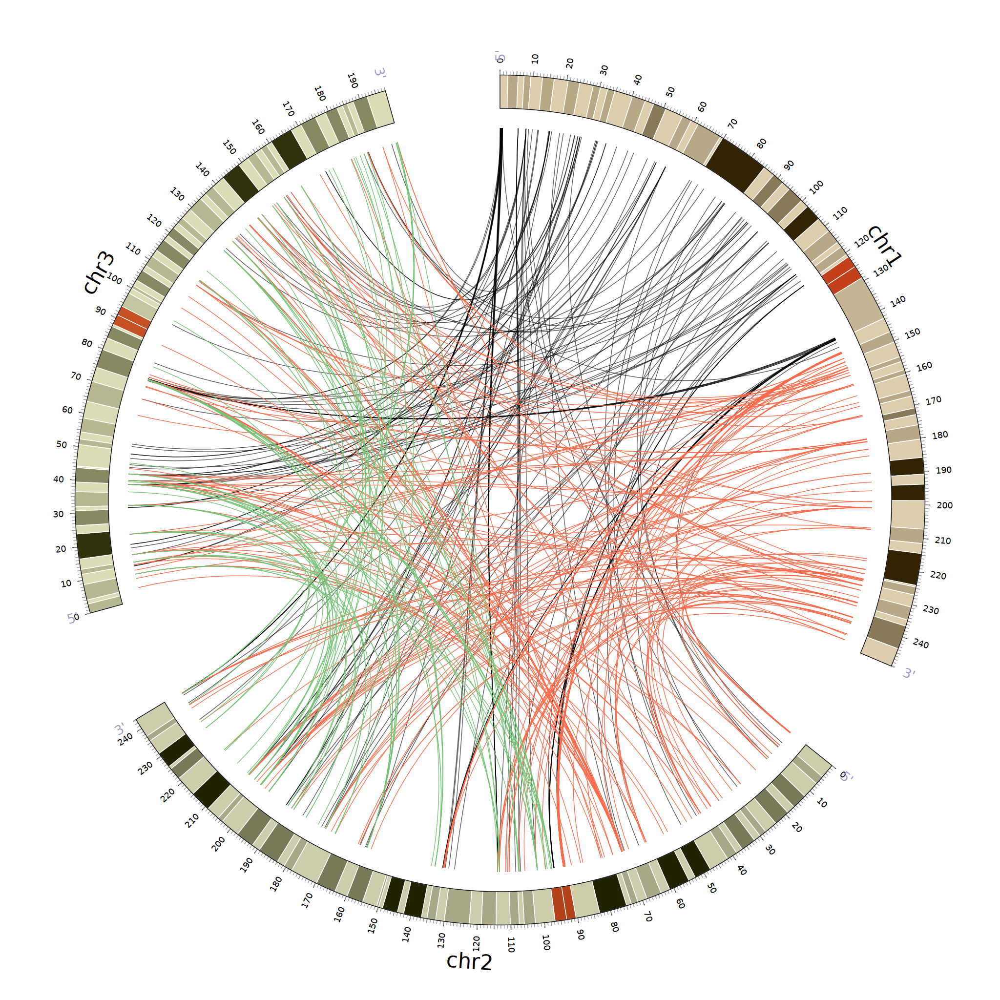
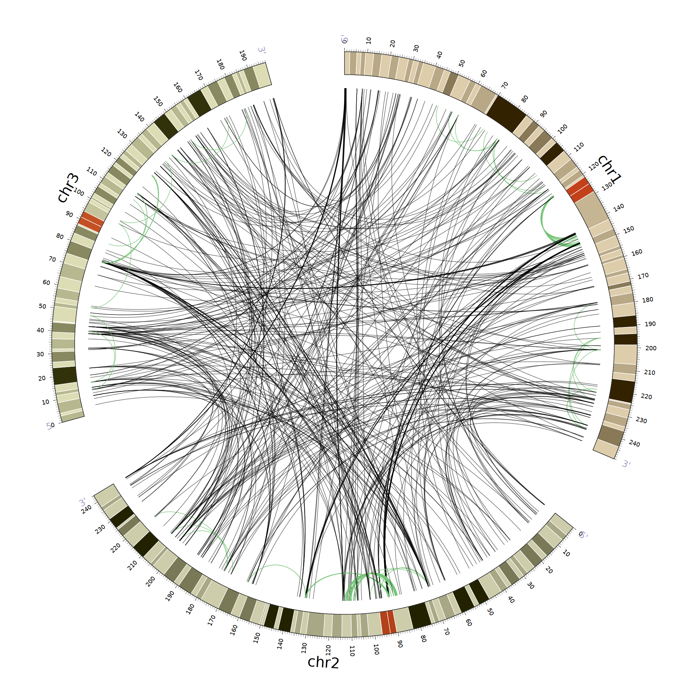
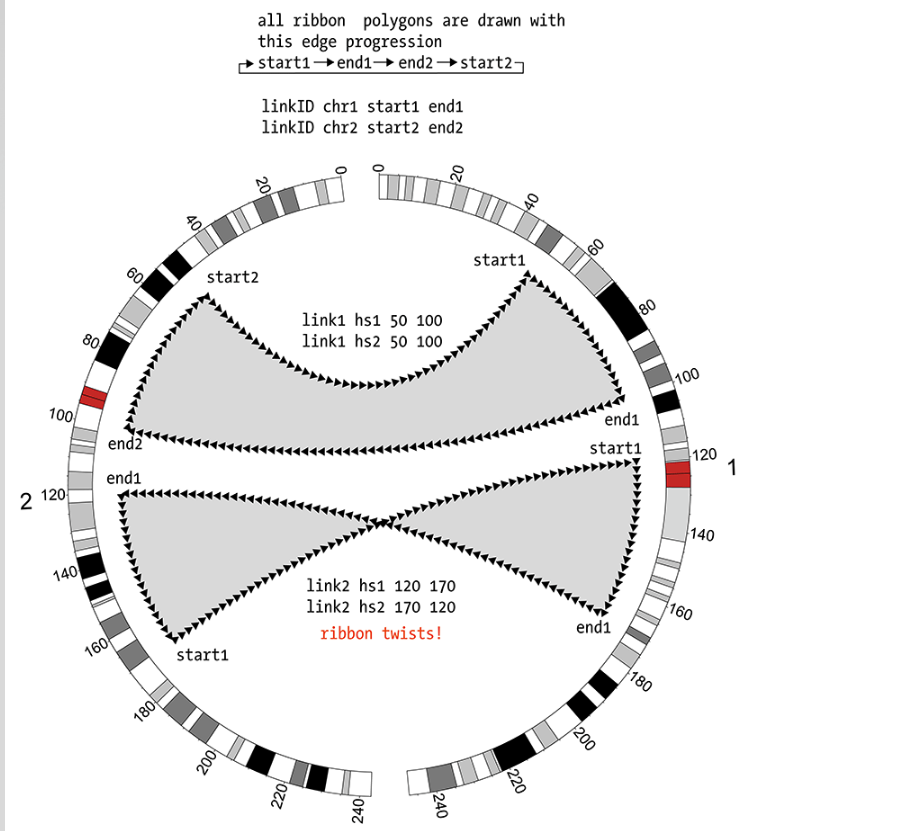

Links是用来展现两个位置之间存在的联系；例如同源基因、两个国家等
主要的数据格式：
#第一种格式
...
hs1 100 200 hs2 250 300 color=blue
hs1 400 550 hs3 500 750 color=red,thickness=5p
hs1 600 800 hs4 150 350 color=black
...
###第二种格式
...
segdup00010 hs1 100 200
segdup00010 hs2 250 300
segdup00011 hs1 400 550
segdup00011 hs3 500 750
segdup00012 hs1 600 800
segdup00012 hs4 150 350
...
第一种格式是官方推荐的格式，两个位置放在同一行
而第二种格式在未来的版本可能会被淘汰：第一列表示links ID号，同一个ID号对应着两行

源代码如下：
- bezier_radius是描述link的弯曲程度；当为0时，绘画出直线
- record_limit = 2000最后再图形上只呈现2000条link
- data_out_of_range* = trim这是在links标签外设置的参数；从字面上可以理解为超出ideogram范围的数据过滤掉
<links>
<link>
file=data/links.txt
radius=0.95r
color=black_a4
bezier_radius=0.1r
thickness=2
record_limit = 2000
</link>
</links>
data_out_of_range*=trim
关于links的geometry几何问题

感觉这个要到具体美化的时候才会用到；先这样记着吧到时候再深入了解............
主要受到以下几个参数的控制
- bezier_radius控制曲率也就是p2点的位置
- radius控制连接处的位置也就是p0和p1位置
- crest则控制p3和p4点的位置；当crest为1时，p3和p4位于p2处；当crest=0时，p3和p4位于p1和p0处
当有多中links重叠时，使用z参数控制优先顺序是个不错的选择

###红色links
z=20
file=../data/links2.txt
radius=0.95r
color=red
bezier_radius=0.1r
thickness=2
###上限显示1000条links
record_limit = 1000
####绿色links
z=50
file=../data/links3.txt
radius=0.95r
color=green
bezier_radius=0.1r
thickness=2
record_limit = 1000
放大图片也可以看到绿色是画在红色上面的！这也就是z参数的作用
在每个单独的link标签内部还可以分别设置对应的bezier_radisu和crest以及link等自定义参数
关于links有一些很实用的rule
on(CHR) returns 1 if data point on chromosome CHR, for links tests both ends
from(CHR) returns 1 if start of link is on chromosome CHR, used for links only
to(CHR) returns 1 if start of link is on chromosome CHR, used for links only
between(CHR1,CHR2) returns 1 if link is between CHR1 and CHR2, regardless of orientation, used for links only
fromto(CHR1,CHR2) returns 1 if link is from CHR1 to CHR2, used for links only
tofrom(CHR1,CHR2) returns 1 if link is from CHR2 to CHR1, used for links only
on(CHR,START,END) returns 1 if data point is on chromosome CHR and intersects coordinate START-END, for links tests both ends
within(CHR,START,END) returns 1 if data point is on chromosome CHR and falls entirely within START-END, for links tests both ends
abs(var(pos1) - var(pos2))< 100Mb这个主要是应用在 condition = var(intrachr)染色体内部的链接规则；当两个连接点的绝对距离满足规则就执行-----

这个图我用了3个规则
<rules>
<rule>
condition=eval(var(intrachr))
condition=abs(var(pos1)-var(pos2))>20Mb
condition=abs(var(pos1)-var(pos2))<10Mb
color=green
bezier_radius=0.75r
</rule>
<rule>
condition=eval(var(intrachr))
condition=abs(var(pos1)-var(pos2))>50Mb
show=no
</rule>
<rule>
condition=eval(var(intrachr))
condition=abs(var(pos1)-var(pos2)) <20Mb
show=no
</rule>
</rules>
关于links一些属性的设置同样可以应用rule规则
<rule>
condition = 1
thickness = eval(sprintf("%d",remap_round(max(var(size1),var(size2)),1,25000,2,6)))
radius = eval(sprintf("%fr",remap(min(var(size1),var(size2)),1,25000,0.5,0.999)))
color = eval(sprintf("spectral-11-div-%d",remap_round(scalar min(var(size1),var(size2)),1,25000,1,11)))
z = eval(int(max(var(size1),var(size2))/100))
</rule>
最后就是关于ribbon的展示了；当links的区域足够大时就可以使用ribbon进行展示
ribbon=yes将显示绸带状的links
stroke_color&&stroke_thickness设置边框
ribbon怎么让它变得扭曲;加上twist参数，强制扭曲

links内容就学习到这里啦！有些部分感觉很简单就没有直接实践，从官网直接截的图方便理解！